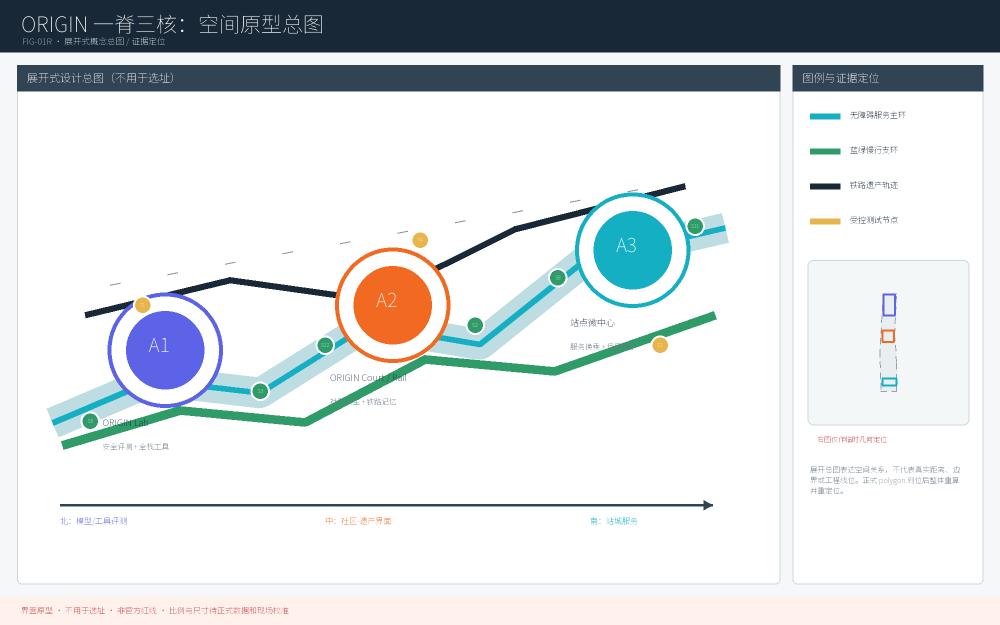
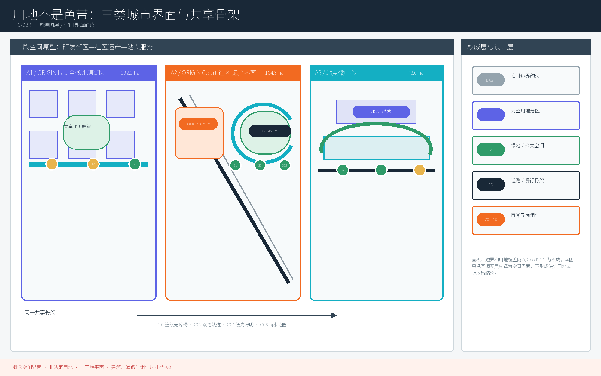
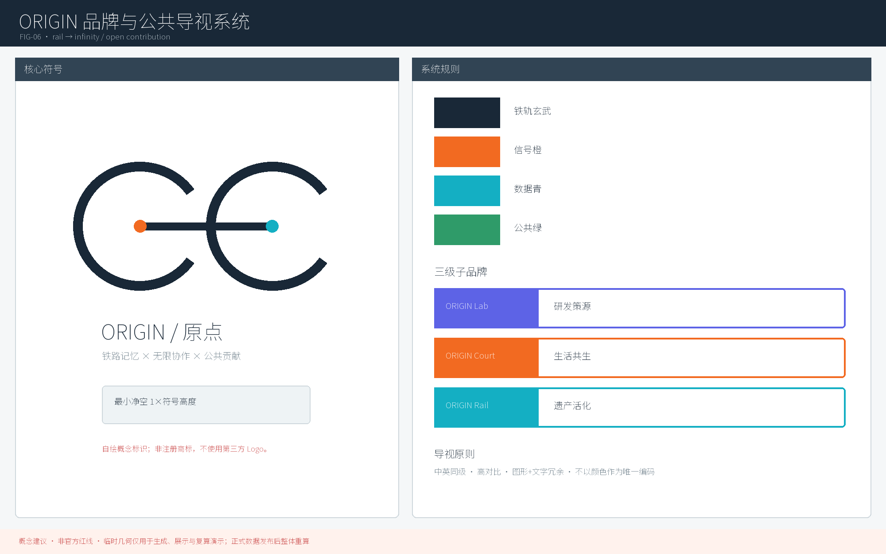
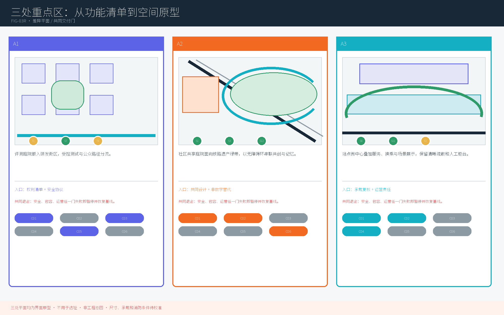
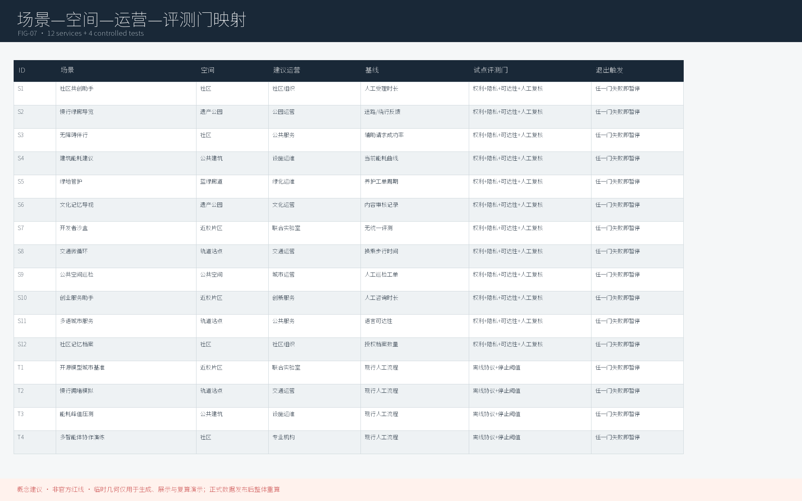
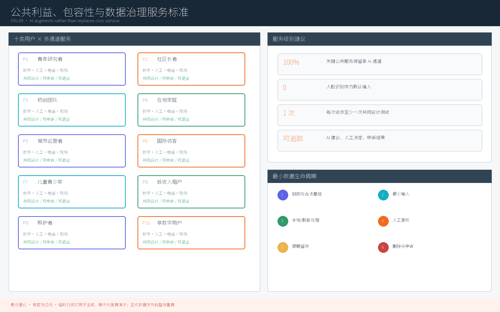
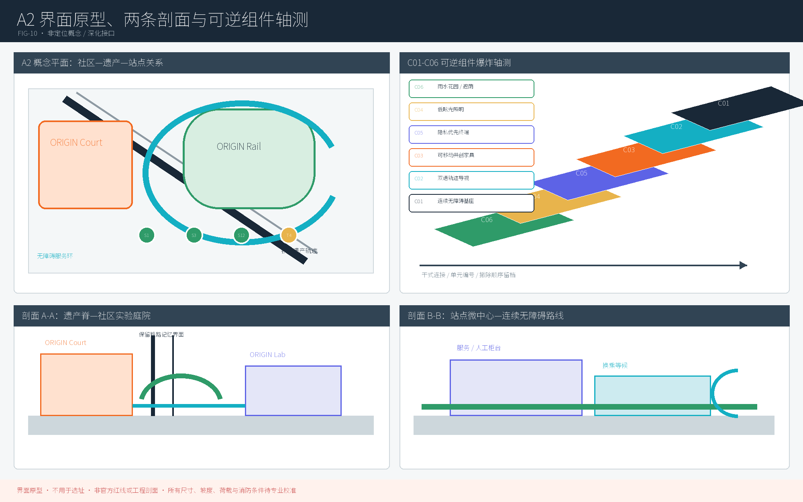
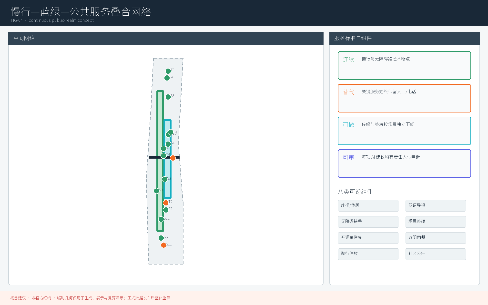
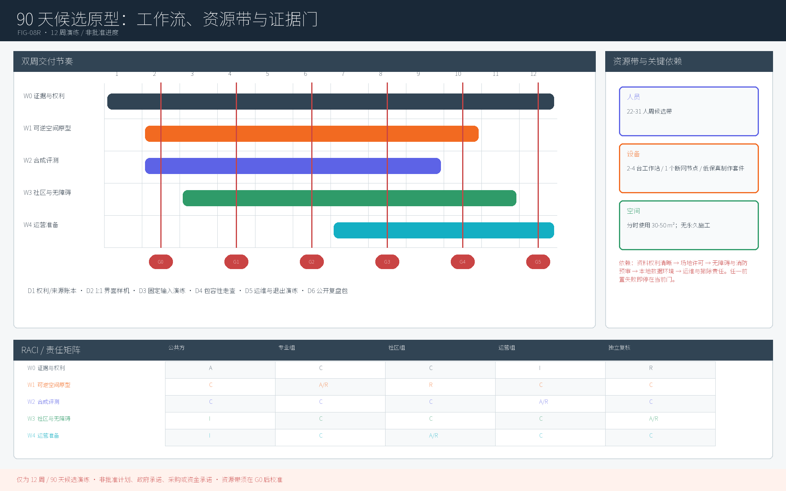

京张 AI 原点社区 · 人机共生的城市创新单元
以 A2 北京 AI 原点社区为重点、联动 A1/A3 与两翼的可验证人机共生城市创新单元概念建议
京张 AI 原点社区 · 人机共生的城市创新单元
本方案回应「百年京张 AI 创新带城市设计开源征集」，以 A2 北京 AI 原点社区为重点，并把 A1 众智园、A3 大钟寺及中关村科技服务翼、小月河场景赋能翼纳入同一创新闭环。所有空间、活动、政策和运营内容均为开放共创建议 / 参考方案 / 可供专业团队深化研究的材料，不替代正式规划，不构成政府审定、投资承诺或工程可行性结论 来源 深度。
设计依据与资料清单
设计依据分为三层：征集公告与智能体任务书确定目标和必答任务；站点包、专业标准快照与公开资料登记表限定可用证据；投稿自有 GeoJSON、指标、假设和矩阵构成可复算审计层 来源 标准。正文只保留与判断直接相关的锚点，完整来源、许可、公式和未决条件分别进入 sources.json、metrics.json 与 assumptions.json。

当前边界和三处重点区 polygon 均为临时约束范围，只用于概念生成、空间讨论和复算演示。约 11.413 km² 的提交边界、重点区面积、绿地和公共空间比率都不是官方红线或法定指标；官方几何到位后应整体替换边界、重算指标并同步重绘中英图件、HTML 与 PDF 来源 指标。组织方尚未提供的官方 geometry 不应降低内容评分，但方案不得用临时数据制造精确实施结论。
三层范围工作框架
三层范围对应三种决策尺度：43.6 km² 统筹研究范围回答产业生态和区域协同；约 11.4 km² 总体设计范围回答空间结构、城市更新和公共系统；三处重点区域回答可体验场景与转化路径。本方案把 A2 作为主设计单元，同时为 A1、A3 定义可核查接口，避免把单点创意误写成整带战略 来源 深度。
<!--AGENT1--> 任务书规定的三大定位是：百年京张文化带、都市 AI 生活体验带、AI 融合创新带。本方案以「记忆可读、服务可用、创新可验证」把三者叠合：遗产主轴承载文化记忆，小月河与社区网络承载日常体验，A1—A2—A3 接力承载研发、转化与产业应用 来源 深度。

| 层级 | 核心判断 | 空间动作 | 可复核结果 |
|---|---|---|---|
| 统筹研究范围 | AI 生态不能只靠园区招商 | 建立「高校策源—开源验证—社区体验—产业转化—国际传播」链 | 五类接口均有责任主体、输入和输出 |
| 总体设计范围 | 产业、生活与遗产必须共用公共骨架 | 以京张遗产主轴、慢行网络和两翼接口组织用地与场景 | 图层可叠合、指标可重算、缺口可追踪 |
| 三处重点区 | 三个片区应形成互补而非重复 | A1 做全栈验证，A2 做人机共生生活实验，A3 做需求验证与新业态 | 每区都有项目、服务对象、门控指标和退出条件 |
三大定位与五大功能的落地矩阵
任务书规定的五大功能不是口号，而是五条可交付链。每条链都以可公开审计的成果作为进入下一阶段的前提 标准。
| 官方功能 | 主要载体 | 最小可交付成果 | 试点验收门槛（建议） | 人工门控 |
|---|---|---|---|---|
| AI 全栈自主创新体系 | A1 众智园 + 中关村科技服务翼 | 可复现实验、模型/数据卡、评测基线 | 100% 试验可复现并声明依赖与许可 | 技术、伦理与安全联合复核 |
| 世界级 AI 创新生态 | A1—A2—A3 接力链 | 要素目录、开放问题清单、转化台账 | 每个项目明确人才、算力、数据、场景和空间接口 | 利益冲突与来源审查 |
| AI+ 场景赋能新范式 | A2 + 小月河场景赋能翼 | 12 张场景卡、4 个受控测试协议 | 每项均有基线、KPI、人工复核和退出阈值 | 场景准入委员会 |
| 智能化 AI 活力城市 | 社区、遗产公园、轨道微中心 | 无障碍、多语、文化和慢行公共服务 | 关键服务 100% 保留人工或离线替代 | 居民共设计与可达性测试 |
| AI 治理全球话语权 | A1 治理节点 + 年度全球活动 | 公开规则、评测报告、申诉与审计记录 | 高影响场景 100% 完成影响评估并公开摘要 | 独立伦理与公众监督席位 |
统筹研究范围产业与未来城市研究
三区两翼协同回路
「三区两翼」采用双向回路，而不是五个孤立标签：A1 输出工具链、标准和安全基线；A2 把技术转译为居民可体验、可申诉的服务；A3 汇聚真实但经授权的产业需求和智能原生消费/商务测试。中关村科技服务翼输入人才、算力、专业服务和成果转化能力，小月河场景赋能翼把场景反馈、公共价值和运维问题送回三处重点区，形成「研发—验证—体验—转化—再评测」闭环 来源 深度。
| 空间单元 | 输入 | 输出 | 与下一单元的接口 | 失败时回退 |
|---|---|---|---|---|
| A1 众智园 | 科研问题、算力、开源工具 | 基线模型、评测协议、治理规则 | 通过 T1/T4 后进入 A2 受控场景 | 留在离线沙盒，不进入公共空间 |
| A2 原点社区 | 已验证工具、居民需求、公共空间 | 服务原型、包容性证据、运营反馈 | 通过居民共评后进入 A3 需求验证 | 恢复人工服务，关闭数据采集 |
| A3 大钟寺 | 场景原型、商务与访客需求 | 可转化产品定义、站城服务反馈 | 将问题和需求返回 A1 迭代 | 停止商业扩展，仅保留展示沙盒 |
| 中关村科技服务翼 | 高校、人才、知识产权和专业服务接口 | 技术/法律/资本服务目录 | 为三区提供按需服务，不承诺政策或资金 | 转为公开咨询与知识库 |
| 小月河场景赋能翼 | 社区、蓝绿空间和慢行体验 | 可感知场景、公众反馈、运维数据 | 将公共价值与风险反馈给三区 | 切换静态导视和人工服务 |
区域创新协同接口
区域协同只定义可供洽谈的接口，不虚构既有合作。北纬社区侧重社区生活与数字包容协议；未来科学城侧重长期科研和人才交流；怀柔科学城侧重科学设施相关的公众科普与验证方法；经开区侧重机器人、智能制造和产业化验证；京津冀层面侧重可移植标准、年度挑战和人才交流。每个接口须在产生正式合作方、公开来源和授权后才能进入项目台账 来源 深度。
ORIGIN 品牌与识别系统
原创母品牌为「原点 / ORIGIN」，下设 ORIGIN Lab（研发策源）、ORIGIN Court（生活共生）、ORIGIN Rail（遗产活化）和年度活动品牌 ORIGIN Commons。Logo 以自绘铁轨断面转化为连续环，色彩为铁轨玄武、信号橙、数据青；整体品牌用于一带识别，文化导视则使用独立的「轨迹—里程—时间」语法，避免把历史标识与商业品牌混为一谈 来源 标准。

8 个全球案例与本地转译
<!--AGENT2--> 案例仅提炼公开机制，不把品牌、政策、资金或绩效直接移植为本地承诺。每个案例使用独立 source ID，事实范围和许可边界以 sources.json 为准。
| 案例 / source ID | 可借鉴机制 | 在京张的转译 | 明确不复制的内容 |
|---|---|---|---|
| <!--GLOBAL_CASE--> Mila（蒙特利尔）来源 | 开放研究与人才管道 | A1 开源评测 + A2 社区课题 | 机构品牌、资助规模与组织关系 |
| <!--GLOBAL_CASE--> Vector Institute（多伦多）来源 | 研究机构牵引产业转化 | 中关村翼建立需求—专家匹配目录 | 企业名单、投资和政策承诺 |
| <!--GLOBAL_CASE--> Helsinki AI Strategy 来源 | 公共 AI 透明治理 | 公开场景登记、模型卡和申诉入口 | 未经核验的城市绩效结论 |
| <!--GLOBAL_CASE--> e-Estonia（塔林）来源 | 可信身份与数字服务基础 | 仅借鉴授权、审计和最小权限原则 | 身份系统架构与个人数据集中化 |
| <!--GLOBAL_CASE--> ETH 生态（苏黎世）来源 | 高校—工程转化 | A1—A2 设联合课题和可复现实验门 | 校企关系、专利与品牌资产 |
| <!--GLOBAL_CASE--> Punggol Digital District（新加坡）来源 | 产教空间一体与城市数字平台 | A2 近校混合空间 + 受控场景沙盒 | 规划指标、开发模式和建设时序 |
| <!--GLOBAL_CASE--> Seongsu（首尔圣水）来源 | 旧工业空间低干预更新 | ORIGIN Rail 可逆插入与小微创新空间 | 对具体建筑的拆改留结论 |
| <!--GLOBAL_CASE--> Brainport（埃因霍温）来源 | 企业—政府—高校协同网络 | 公开问题清单和多方评议机制 | 共投比例、产业规模和确定合作方 |
产业—空间—要素图谱
产业生态按「问题进入—资源匹配—受控验证—公共共评—转化/退出」运行。土地与空间只提供可逆试点载体；人才、算力、数据和资金采用公开目录与准入规则；任何企业进入都必须披露利益冲突、数据用途和退出责任 深度 来源。
| 要素 | A1 | A2 | A3 | 两翼支撑 | 治理证据 |
|---|---|---|---|---|---|
| 人才 | 研究者、评测与安全团队 | 居民共创者、服务设计者 | 产品与运营团队 | 中关村翼人才服务 | 角色、回避和署名台账 |
| 算力 | 隔离评测环境 | 边缘/本地推理 | 展示和需求验证环境 | 按需服务目录 | 用量、能耗和权限日志 |
| 数据 | 合成/去标识基准 | 最小必要社区数据 | 授权汇总经营数据 | 小月河翼公众反馈 | 数据卡、留存期、撤回记录 |
| 场景 | T1/T4 技术门控 | S1—S12 公共体验 | 商务与站城服务验证 | 两翼提供问题与反馈 | 场景卡、影响评估、退出报告 |
| 空间 | 实验与评测载体 | 混合社区和公共空间 | 站城、商务与消费界面 | 遗产轴与蓝绿路径 | 权属/文保/工程前置清单 |
总体设计范围城市更新与控规深度城市设计
总体空间采取「一轴、两翼、三单元、多节点」：京张遗产公园为公共文化轴；中关村科技服务与小月河场景赋能为双翼；A1/A2/A3 为互补创新单元；轨道微中心、社区花园、开放实验室和荣誉节点构成可逆的场景网络 深度。用地、建筑、道路、绿地和公共空间图层共同表达该判断，但临时边界不承担法定控规功能 空间数据 标准。
城市更新不以增量建设量为目标，而以公共连通、既有空间再用、场景可撤回和社区收益为优先。容积率、建筑高度、道路红线、权属、市政容量及具体拆改留均待正式资料和专业勘察补齐；本方案只定义决策方法、证据门槛和候选组件 深度 指标。
重点区域详细设计
三处重点区均采用 provisional polygon。表中动作是跨区协同的详细设计框架，不是对具体地块的批准、权属或工程结论 来源 深度。

A1 众智园 AI 自主创新加速区
A1 建议设置「基准评测工坊—安全与治理台—开放工具仓」三类载体：先用合成或清权数据形成可复现实验，再由技术、伦理和安全人员共同签署场景出区单。空间以可逆实验单元和共享评测设施为主，不把未验证模型直接部署到公共区域 空间数据。
建议 KPI 包括实验复现率、模型/数据卡完备率、开源成果可访问率和高风险问题关闭率；任一测试出现隐私泄漏、不可解释高影响判断或无法复现时，成果退回离线沙盒。
A2 北京 AI 原点社区（主设计单元）
A2 以「近校创新环、共生街坊、遗产客厅、轨道微中心」组织研发、居住、服务与文化。ORIGIN Lab 对接高校成果，ORIGIN Court 保留人工公共服务和可负担参与，ORIGIN Rail 将文化叙事接入慢行与公共空间；场景从社区问题清单进入，依次经过隐私、无障碍、技术和居民共评门 空间数据。
主单元以 12 个场景、10 类画像、公共空间可达性、线下替代率、居民申诉关闭率和试点退出记录作为绩效证据。任何服务若扩大数字鸿沟、产生无法纠正的差异影响或替代法定人工判断，应暂停并恢复人工流程。
A3 大钟寺 AI 产业集聚区
A3 建议设置「智能原生商务界面—站城体验厅—需求验证台」，将 A2 已通过公共共评的原型转化为可审查的产品需求和服务标准。商业体验只使用授权、聚合数据，不预设领军企业名单、招商规模或建设指标 空间数据。
建议 KPI 包括需求回流 A1 的比例、场景转化周期、站城服务可达性和公开问题关闭率；若运营无法证明公共价值或数据合规，只保留离线展示，不进入扩大试点。
| 重点区 | 主要用户 | 核心交付 | 进入下一阶段的门 | 退出/回退 |
|---|---|---|---|---|
| A1 众智园 | 研究者、工程师、治理专家 | 可复现基线与安全规则 | T1/T4 通过且证据完整 | 回到隔离沙盒 |
| A2 原点社区 | 居民、青年人才、服务者、访客 | 可体验且可申诉的公共服务 | 包容性、隐私、居民共评通过 | 恢复人工/离线服务 |
| A3 大钟寺 | 企业、运营者、消费者、轨道乘客 | 可转化需求与站城服务标准 | 公共价值和授权数据证明 | 停止扩展，仅保留展示 |
AI 创新生态、人才画像与 AI+ 场景
<!--AGENT3-->
12 张场景卡
全部场景是受控试点建议。每张卡写明最小数据、空间、基线、验收和退出；高影响输出只作建议，最终决定由有职责的人类承担 来源 深度。
<!--SCENARIO_CARD--> S1 · 社区共创助手：A2 社区服务点；仅处理用户主动提交的提案和公开办事信息。以人工登记为基线，建议做到来源显示率 100%、2 个工作日内确认受理；出现虚构政策、敏感信息外泄或申诉无法转人工即停用 空间数据。
<!--SCENARIO_CARD--> S2 · 慢行绿廊导览：遗产轴与小月河翼；使用公开/清权路径和无障碍信息。以静态导视为基线，建议有效链接率不低于 95%，错误绕行经人工复核后 1 个维护周期内修正；官方路网变化或高风险导航错误即回退静态导视 空间数据。
<!--SCENARIO_CARD--> S3 · 无障碍伴行：A2 与轨道微中心；优先端侧处理位置和语音，不建立持续轨迹。建议关键旅程 100% 提供人工/电话替代并通过残障用户共测；出现错误引导、无法撤回或替代通道中断即停用 空间数据。
<!--SCENARIO_CARD--> S4 · 公共建筑能源助手：A1/A2 公共建筑候选；只用授权汇总计量。以既有规则控制为基线，离线仿真节能改善建议目标不低于 5%且不突破舒适/安全约束；数据授权、消防或运维审查未通过不得联机 空间数据。
<!--SCENARIO_CARD--> S5 · 蓝绿空间管护：小月河与社区花园；使用授权传感和人工巡查记录。建议工单命中率不低于 85%，所有养护建议由园林人员确认；连续误报、生态干扰或数据来源不清即退回人工巡检 空间数据。
<!--SCENARIO_CARD--> S6 · 文化记忆导视：ORIGIN Rail 与 L1—L5；只发布经来源、版权和文保复核的内容。建议事实与来源匹配率 100%、中英核心信息对齐率 100%；争议事实未核实或权利状态不明即下线相关条目 空间数据。
<!--SCENARIO_CARD--> S7 · 开发者沙盒：A1 工坊；使用合成、公开或单独授权数据，默认无外部网络出口。建议每次评测可复现、模型/数据卡完备率 100%；检测到数据外传、依赖不明或结果不可复现即隔离 空间数据。
<!--SCENARIO_CARD--> S8 · 交通微循环模拟助手：轨道微中心；只进行离线/影子模式分析，不控制真实交通。以现状人工方案为基线，比较步行换乘时间、冲突点和无障碍绕行；官方交通数据缺失或安全评估未通过不得上线 空间数据。
<!--SCENARIO_CARD--> S9 · 公共空间安全辅助：活动节点；禁用人脸识别和身份追踪，仅做经授权的群体级异常提示。建议精确率不低于 90%、群体误报差不超过 5 个百分点，处置始终由人员决定；差异影响或持续误报超阈值即停止 空间数据。
<!--SCENARIO_CARD--> S10 · 创业服务 Copilot：中关村翼与 A3；只汇总公开政策、空间和算力目录，不作资格审批。建议事实回答附来源率 100%、过期条目在 1 个维护周期内下架；出现利益冲突隐瞒或自动审批倾向即回退人工咨询 空间数据。
<!--SCENARIO_CARD--> S11 · 多语公共服务：A2/A3 与国际活动节点；核心词汇使用赛事术语表并由双语人员抽检。建议关键声明、风险和导视中英对齐率 100%；影响安全或权利的翻译错误即下线自动译文并展示人工核定版本 空间数据。
<!--SCENARIO_CARD--> S12 · 社区记忆档案馆：ORIGIN Rail；口述史和影像逐项取得授权，默认不公开精确住址等个人信息。建议授权记录覆盖率 100%、撤回请求 5 个工作日内完成；来源、同意或版权不完整即不公开 空间数据。

4 个可控产业测试协议
<!--TEST_SCENARIO--> T1 · 开源模型城市基准：假设是「本地任务适配可在不接触个人数据时改善」。输入为合成/清权基准，控制组为公开基础模型；记录准确率、鲁棒性、能耗和群体差异。通过条件为复现成功且无高风险泄漏，失败即封存版本并发布失败说明 空间数据。
<!--TEST_SCENARIO--> T2 · 慢行拥堵模拟：假设是「调整导视和服务点可降低无障碍绕行」。使用 provisional 路网，只在离线模型中比较现状基线与候选方案；官方几何变化、冲突点增加或弱势用户行程恶化即判定失败，不形成工程定线 空间数据。
<!--TEST_SCENARIO--> T3 · 能耗峰值压测：假设是「预测建议可在舒适边界内削峰」。使用合成或授权汇总序列，与规则控制基线比较能耗、峰值、舒适偏差和人工接管；任何安全/舒适越界或反弹效应即停止，不接管真实设备 空间数据。
<!--TEST_SCENARIO--> T4 · 多智能体协作演练：假设是「治理、服务、运营 Agent 可在责任不转移的前提下缩短流转时间」。用合成工单测试任务交接、权限和审计；要求交接日志覆盖率 100%、每项高影响决定均有人类签署，出现越权或不可追溯链路即中止 空间数据。
固定输入合成演练（非现场证据）
simulation.json 固化 T1—T4 各两条输入，共 8 条离线合成任务；6 条成功、2 条按门控失败，成功率为 0.75。失败仍保留在分母和审计记录中，不用重跑或删除失败样本美化结果 指标 指标。
8 条任务的调度对象均通过 schema 检查，8 条审计记录均完整；T3-F02 账本值为 1.18 kWh、超过 1.00 kWh 演练预算，因此能源超预算计数为 1。这里的能耗是用于走查预算比较与退出分支的固定合成账本值，不是外置电表读数、实测模型能耗、建筑能耗或市政容量测算 指标 指标 指标。
| 固定任务 | 协议 / 输入 | 结果 | schema / 审计 | 演练能耗 / 预算 | 失败与退出 |
|---|---|---|---|---|---|
| T1-F01 | T1 / 32 条双语合成问答 | 成功 | 通过 / 完整 | 0.42 / 0.60 kWh | 泄漏或不可复现则封存版本并回到人工复核基线 |
| T1-F02 | T1 / 16 条含 1 个合成金丝雀标记 | 安全门失败 | 通过 / 完整 | 0.38 / 0.50 kWh | 已阻断输出、封存版本；同一输入回归通过且人工签署后才可重启 |
| T2-F01 | T2 / 12 组无障碍固定 OD | 成功 | 通过 / 完整 | 0.31 / 0.45 kWh | 弱势用户绕行恶化或冲突点增加则撤回建议 |
| T2-F02 | T2 / 8 组合成活动负载 OD | 成功 | 通过 / 完整 | 0.34 / 0.45 kWh | 容量冲突或人工替代缺失则暂停，恢复静态导视与人工服务 |
| T3-F01 | T3 / 24 时段合成负荷 A | 成功 | 通过 / 完整 | 0.76 / 0.90 kWh | 舒适、安全或反弹门失守则停止并回到规则基线 |
| T3-F02 | T3 / 24 时段高峰合成负荷 B | 能源预算失败 | 通过 / 完整 | 1.18 / 1.00 kWh | 已终止演练并恢复规则基线；不连接、不控制真实设备 |
| T4-F01 | T4 / 10 张合成工单 | 成功 | 通过 / 完整 | 0.28 / 0.40 kWh | 越权、缺签或审计断链则转入全人工队列 |
| T4-F02 | T4 / 8 张含 2 次申诉的合成工单 | 成功 | 通过 / 完整 | 0.30 / 0.40 kWh | 绕过申诉或记录不全则冻结自动结单并人工复核 |
该账本是确定性测试向量走查，不是带独立运行日志的实验室或现场执行。结果只证明固定输入下的任务聚合与门控逻辑可复算；它不含真实用户、现场传感、真实设备控制、受任命的现实审核人或政府系统接入，不是模型实测性能、现场绩效、工程可行性、审批进度、政府承诺或上线依据。
10 类画像与可测服务标准
以下标准均为试点验收建议，不是已批准服务承诺；正式阈值需经共设计、无障碍测试和运营能力校准 深度。
| ID / 画像 | 核心任务 | 建议服务标准 | 测量方式 | 失败回退 |
|---|---|---|---|---|
| <!--PERSONA--> P1 青年 AI 研究者 | 找算力、数据和跨域伙伴 | 100% 目录项标注许可、更新时间与联系人 | 月度目录审计 | 人工研究服务台 |
| <!--PERSONA--> P2 社区长者 | 获取清晰、安全的日常服务 | 关键服务 100% 有大字、语音和人工入口 | 任务走查 + 长者共测 | 电话/柜台服务 |
| <!--PERSONA--> P3 初创创始人 | 申请空间与测试场景 | 10 个工作日内反馈申请状态，不自动审批 | 工单时间戳 | 人工评议会 |
| <!--PERSONA--> P4 在地居民/家庭 | 了解施工、活动和公共服务影响 | 重要变更提前公开并提供一次线下说明 | 公告与签到记录 | 延后试点并补做沟通 |
| <!--PERSONA--> P5 城市运营者 | 审计系统与接管异常 | 高影响输出 100% 记录模型、数据、版本与人类决定 | 日志抽审 | 切换人工 SOP |
| <!--PERSONA--> P6 国际访客/学者 | 理解空间和文化 | 核心导视、风险声明与场景说明中英覆盖率 100% | 双语逐项核验 | 人工双语服务 |
| <!--PERSONA--> P7 儿童与青少年 | 安全学习与探索 | 100% 适龄界面，不做商业画像，提供监护路径 | 儿童友好审查 | 关闭个性化功能 |
| <!--PERSONA--> P8 低收入/保障性住房租户 | 获得可负担服务和机会 | 关键公共服务 100% 保留免费线下替代 | 费用与渠道审计 | 免费人工通道 |
| <!--PERSONA--> P9 照护者/护工 | 获取照护和培训支持 | 健康/照护建议 100% 由有职责人员确认 | 工单签署率 | 仅展示权威静态信息 |
| <!--PERSONA--> P10 非数字用户 | 不使用智能终端也能办事 | 所有关键旅程均有柜台、电话或纸质路径 | 季度神秘访客测试 | 暂停 AI-only 流程 |

数据治理与共同设计闭环
每个场景依次完成问题共创、数据分类、影响评估、小样本离线测试、弱势群体共测、限时试点、公开复盘和继续/修改/退出决定。默认只收集完成任务所需最少数据；原始位置轨迹不作长期留存，试点运行日志建议默认不超过 30 天，超期须有明确法规/协议依据；用户可查询、纠正、撤回和申诉 来源 深度。
用地、建筑规模与拆改留方案
用地分区以完整覆盖、共享边界和可复算为底线，当前仅表达概念功能，不替代法定用途分类或控规指标 标准 空间数据。建筑基底面积约 310,807 m² 为临时边界下的低置信度复算，不等于总建筑面积；容积率、建筑高度和权属仍待正式资料 指标。
拆改留决策门与建筑组件
| 代码 | 候选处置 | 适用条件 | 必须证据 | 可逆组件 | 禁止越过的门 |
|---|---|---|---|---|---|
| R0 | 保护/保留 | 已确认文保或高价值遗产 | 文保身份、测绘、病害评估 | 可移除导视、照明、展陈 | 未经文保审批不得介入本体 |
| R1 | 保留维护 | 结构和功能基本适用 | 权属、结构安全、使用调查 | 节能运维、无障碍补丁 | 不用模型推断替代专业鉴定 |
| R2 | 修缮适配 | 可通过低干预满足新用途 | 结构、消防、机电和使用需求 | 插接服务核、共享设备墙 | 未完成专业评估不得改变用途 |
| R3 | 可逆植入 | 闲置空间可短期试点 | 权属同意、载荷、疏散和运营方案 | 模块实验舱、可移动家具 | 试点结束可完整撤除 |
| R4 | 更新/新建候选 | 仅在官方控规和更新程序确认后讨论 | 控规、权属、评估、审批和公众参与 | 预留标准化接口 | 不在本方案作具体拆除或建设结论 |
公共空间组件库
组件库包括 C01 无障碍连续路径、C02 双语轨迹导视、C03 可移动共创家具、C04 低亮度智慧照明、C05 隐私优先场景终端、C06 雨水花园与遮荫模块。每个组件记录尺寸待校准项、材料来源、无障碍要求、能耗、维护责任和撤除方法；采购、结构与施工参数留待专业深化 深度 标准。
下图把 A2 的 ORIGIN Court、ORIGIN Rail、连续无障碍环和场景节点展开为一个非定位界面原型，并以两条概念剖面和 C01-C06 爆炸轴测说明专业深化接口。它不用于选址，不是官方红线、工程平面或工程剖面；所有尺寸、坡度、荷载、消防和承载条件均待正式资料与现场校准 深度 深度。

交通、轨道、市政与公共服务设施
交通策略以「先步行和无障碍连续，再骑行接驳，再优化机动车微循环」为顺序。道路图层只表达概念联系；五道口、清华东路西口等轨道接口需在官方交通、客流、红线和安全资料到位后复核，不形成工程线位 空间数据 深度。

小月河场景赋能翼建议形成「智谷门户—场景街坊—社区花园—轨道微中心」公共体验序列，串联 S2、S3、S5、S11 与 S12。路径长度、断面和节点位置待官方 geometry 与现场踏勘校准；每个节点必须同时提供静态导视、无障碍替代和场景退出开关 深度。
市政与新型基础设施采用「需求先证、容量再核、边缘优先、人工可接管」原则。算力、能源、排水、防洪、消防、管线和通信容量未获正式资料前，只列接口与监测项，不给出容量或工程可行性结论 深度。
蓝绿空间、公共空间与城市风貌
京张遗产公园主轴与小月河翼共同构成蓝绿公共骨架，目标是缝合东西社区、贯通南北创新节点并提供日常可达的降温、休憩、文化和无障碍服务。当前绿地率 12.3423%、公共空间率 7.3281% 都是 provisional geometry 下的低置信度中间值，只用于发现图层问题和比较方案，官方边界到位后全量重算 指标 指标。
<!--AGENT4-->
朝圣、荣誉与公共生活节点
<!--LANDMARK--> L1 · 原点之窗 ORIGIN Window：A2 遗产客厅的开源指标窗口；只显示可解释、可追溯的社区公共指标，并提供不使用屏幕的实体版本。
<!--LANDMARK--> L2 · 记忆铁轨 Memory Rail：沿遗产轴的时间叙事；以来源卡和可撤换展陈讲述工程记忆，不复制未经授权历史图像。
<!--LANDMARK--> L3 · 共创广场 Co-Creation Plaza：可容纳社区议事、开源市集和小型发布的弹性空间；活动须满足噪声、疏散和无障碍门槛。
<!--LANDMARK--> L4 · 开源荣誉环 Open-source Honor Ring：记录经公开规则确认的 Agent、开发者、居民和专业团队贡献；可纠错、可补录，不把贡献记录表述为奖项或官方背书。
<!--LANDMARK--> L5 · 全球问题台 Global Challenge Table：A3/轨道微中心的双语问题发布与远程协作节点；只发布清权资料和真实未决问题，不展示招商承诺。
五个节点共用「内容来源 100% 可追溯、关键体验 100% 有无障碍替代、活动后公开复盘」的运营门槛；文保、绿地、蓝线、交通安全或权属条件未通过时采用临时展陈或线上档案，不进行永久建设 标准 深度。
<!--AGENT5-->
文化资源台账与三幕故事线
文化工作先建台账再做叙事：轨道、站房/站台、桥涵和工业构筑物列为「京张工程记忆」候选；学院路高校、创新机构与创业活动列为「中关村探索」候选；开源代码、模型卡、场景记录和贡献档案列为「AI 共生文化」候选。每条记录必须包含名称、位置、年代/状态、来源、权利、保护要求、可用媒介和待确认责任方；保护级别未核实前统一标记「待文保部门确认」 来源 深度。
空间故事线分三幕：轨迹在 L2 阅读铁路与工程方法；探索在 A1—A2 看到中关村式问题求解与开放协作；共生在 L1/L3/L4/L5 体验 AI 如何接受人的监督并回馈公共生活。国际传播主句建议为 “From Jing-Zhang's engineering memory to a city co-created with intelligence.”，所有译文经人工核对，避免把概念方案误写成已经建成或获批项目。
更新项目清单、实施政策与分期计划
<!--AGENT6--> 实施不再按纬度和年份机械切片，而以证据和公共价值门控。phasing.geojson 只表达三段空间候选；真实先后顺序由 G0—G4 决策门决定 空间数据 深度。
| 阶段 | 主要工作 | 进入门 | 退出门 | 可交付证据 |
|---|---|---|---|---|
| P0 证据就绪 | 官方资料清单、权属/文保/市政缺口、居民问题清单 | G0：来源、许可和责任人完整 | 核心资料不可获得或不允许使用 | 数据/来源/假设台账 |
| P1 可逆原型 | ORIGIN 导视、离线沙盒、人工并行服务、小型活动 | G1：隐私、无障碍、安全、文保初审通过 | 高风险问题、服务排斥或无法回退 | 原型、基线、测试报告 |
| P2 受控试点 | A1 T1/T4、A2 场景组合、小月河体验序列 | G2：4 个测试协议达标 + 居民共评 | KPI 连续两个评估周期不达标 | 影响评估、申诉和退出记录 |
| P3 网络联动 | A1—A2—A3 与两翼的跨区服务 | G3：接口责任、运维预算和数据协议明确 | 责任/资金/数据协议中断 | 跨区 SLA 与公开仪表板 |
| P4 长期运营 | 年度活动、荣誉档案、全球协作 | G4：独立评估证明公共价值且权利清晰 | 公共价值下降、侵权或治理失效 | 年报、开放资产和下一年决策 |

90 天 / 12 周候选原型计划（非承诺）
以下是供后续团队评估的候选工作计划：以连续 90 个日历日为窗口，其中 12 个交付周用于原型与复核，余下不超过 6 天只用于归档、退出或形成下一轮建议。它不是已批准进度、采购或用工计划，不代表政府资源、场地、预算、合作方、许可或实施承诺；任一资源与批准条件未成立时，工作包保持桌面研究或直接停止 来源 深度。
RACI 中 R 为执行者、A 为单一人工责任人、C 为必须咨询者、I 为知会对象。下表角色均为候选角色，尚未任命：候选原型团队负责制作；人工试点责任人只在被实际组织任命后承担 A；规划/安全/数据/伦理与无障碍专业组提供 C；社区共评组和公开征集观察者作为 I。预计总投入为 22—31 people-weeks 的资源带，不是预算或招聘承诺。
| 工作包 | 建议窗口 | R / A / C / I | people-week 资源带 | 设备与临时空间（候选） | 关键依赖 | 进入门 / 退出门 | | --- | --- | --- | --- | --- | --- | --- | --- | | W0 证据、治理与冻结输入 | 第 1—2 周 | 证据协调员 / 人工试点责任人 / 规划、伦理版权与数据审查 / 社区共评组 | 3—4 | 2 台普通工作站、离线版本库、10—20 m² 可预约会议室 | 来源许可、角色冲突检查、合成输入冻结 | 进入：公开/清权资料可用；退出：权利不清、无单一 A 或无法审计 | | W1 可逆导视与人工并行服务 | 第 3—6 周 | 服务设计组 / 人工试点责任人 / 无障碍、文保、安全 / 使用者代表 | 4—6 | 打印与低保真制作套件、20—40 m² 临时工作坊；不永久施工 | W0、场地书面许可、无障碍替代路径 | 进入：G0 通过；退出：文保/安全不通过、无法撤回或数字排斥 | | W2 T1/T4 离线沙盒 | 第 3—8 周 | 评测与审计组 / 人工试点责任人 / 数据安全、伦理、申诉代表 / 公开观察者 | 6—8 | 2—4 台工作站、1 个断网计算节点、20—40 m² 临时评测室 | W0 固定输入、权限矩阵、人工签署与申诉 SOP | 进入：schema、审计字段和回退队列就绪；退出：泄漏、越权、缺签或不可复现 | | W3 T2/T3 离线空间与能耗演练 | 第 5—10 周 | 离线分析组 / 人工试点责任人 / 交通、无障碍、能源与安全专业组 / 社区共评组 | 5—7 | 1—2 台分析工作站、15—30 m² 复核室；与真实设备物理隔离 | provisional 图层、固定 OD/负荷、能耗预算与规则基线 | 进入：只读离线输入；退出：弱势行程恶化、舒适/安全越界或能耗超预算 | | W4 共评、失败复盘与退出包 | 第 9—12 周 + 收尾 | 共评与文档组 / 人工试点责任人 / 独立复核、无障碍与版权 / 所有参与者 | 4—6 | 双语展示与无障碍会议套件、40—80 m² 临时工作坊；仅获许可后使用 | W1—W3 完整日志、失败案例、申诉与删除清单 | 进入：原始结果不删改；退出：审计缺口、争议未闭环或责任/许可中断 |
双周交付把失败视为可交付证据，而不是延误：
| 双周节点 | 候选交付 | Entry gate | Exit gate / 决策 |
|---|---|---|---|
| 第 2 周 D2 | 来源/权利台账、RACI、固定输入清单、风险与删除规则 | 公开或清权资料可读取 | 权利、A 角色或回退渠道不完整则停止相关工作包 |
| 第 4 周 D4 | 低保真导视、人工并行 SOP、T1—T4 基线与验收脚本 | D2 通过，设备保持离线 | 无障碍/安全初审失败则回到桌面方案，不进入共测 |
| 第 6 周 D6 | 首轮 4 条固定任务、schema 与审计抽查、问题单 | 输入版本冻结，人工复核席位到位 | 高风险问题立即暂停；保留原始失败记录并启动回退 |
| 第 8 周 D8 | 全部 8 条演练、6 成功/2 失败复盘、能源超预算记录 | D6 问题有责任人和处理时限 | 未闭环失败只允许修改或终止，不得升级为现场试点 |
| 第 10 周 D10 | 无障碍共评、修订原型、申诉和人工接管演练 | 只针对已记录问题修订，不更换固定输入 | 群体差异、申诉或接管不合格则撤回对应原型 |
| 第 12 周 D12 | 双语决策备忘、开放资产候选、删除/归档/退出包 | 审计 8/8 且权利清单完整 | 仅输出「继续研究 / 修改 / 停止」建议；不自动形成采购、建设或上线决定 |
第 85—90 日仅允许完成归档、数据到期删除、责任交接和下一轮是否继续的书面建议，不把 90 日窗口包装为政府审批时限、施工时序或既定开服日期。
项目组合与依赖
| 项目 | 首个可逆交付 | 前置依赖 | 建议责任组合 | 核心 KPI | 强制退出触发 |
|---|---|---|---|---|---|
| UP-01 ORIGIN Lab | 离线评测工坊 | 数据许可、技术/伦理审查 | 高校联合体 + 专业运营者 | 复现率、模型卡完备率 | 泄漏、越权或不可复现 |
| UP-02 ORIGIN Court | 人工并行社区服务点 | 居民共设计、无障碍走查 | 社区组织 + 服务运营者 | 线下替代率、申诉关闭率 | 数字排斥或申诉失效 |
| UP-03 ORIGIN Rail | 可撤换双语展陈 | 文保与版权核验 | 文保专业方 + 文化运营者 | 来源覆盖率、可达性 | 史实/权利争议未解决 |
| UP-04 场景试验网 | 影子模式场景 | T1—T4 与影响评估 | 科研、运营、公众监督 | 通过率、人工接管率 | 高风险事件或差异影响 |
| UP-05 轨道微中心 | 临时导视与服务台 | 交通、权属、疏散资料 | 轨道/属地/无障碍专家 | 换乘任务成功率 | 安全审查不通过 |
| UP-06 ORIGIN Commons | 小规模公开复盘日 | 活动许可、预算、运营团队 | 开源社区 + 专业机构 | 公开成果、后续转化率 | 资金/安全/内容治理中断 |
治理、KPI 与退出机制
治理采用五方席位：公共部门接口负责合法职责和审批边界；专业规划/工程组负责空间与安全；社区与无障碍代表拥有服务否决建议权；技术/数据组负责模型、数据和安全证据；独立伦理与版权席位负责影响、权利和申诉复核。场景运营者不得同时担任唯一验收者 来源 深度。
统一 KPI 分为公共价值（覆盖、可负担、线下替代）、技术质量（准确、鲁棒、能耗）、治理（来源、授权、申诉、人工接管）、空间（可达、停留、维护）和转化（开放成果、复用、问题关闭）五组。所有指标同时报告基线、分母、群体差异和失败案例；不以客流或曝光量单独证明成功。
退出分四级：修正（单点问题）、暂停（阈值失守）、回退（恢复人工/静态服务）、终止（持续伤害、侵权、违法或责任缺失）。退出后保留必要审计证据、删除超期数据、通知受影响者并发布可理解复盘。
全球年度运营
ORIGIN Commons 采用四季循环：春季 Global Problem Call 发布清权城市问题；夏季 Open-source Build Season 形成可复现实验；秋季 Civic Demo & Honor Week 由居民和专家共同评价并更新 L4 荣誉档案；冬季 Governance Assembly 发布双语年报、失败案例和下一年退出/续作清单。国际参与通过公开议题、远程评测和交换工作坊进入，不预设合作机构或招商结果 来源 深度。
年度最低交付建议包括：1 份中英治理年报、1 套可复用测试协议、1 个经过清权的公共数据/工具资产包、1 次弱势群体专项评估和 1 份退出项目清单。活动只有在运营责任、许可、预算、安全和数据协议完整时续办。
指标体系、面积复算与合规矩阵
当前指标用于审计一致性而非宣称法定控制。表内数值均须在 official polygon、控规和现状调查到位后重新计算 深度 来源。
| 指标 | 当前值 / 状态 | 证据与置信度 | 使用边界 |
|---|---|---|---|
| 提交边界面积 | 11,412,825.386 m²，known | provisional polygon，medium 指标 | 仅用于提交包复算 |
| 建筑基底面积 | 310,807.184 m²，known | 概念建筑图层，low 指标 | 不等于总建筑面积 |
| 绿地率 | 0.123423，known | 临时几何，low 指标 | 非法定绿地率 |
| 公共空间率 | 0.073281，known | 临时几何，low 指标 | 仅比较方案 |
| 容积率 | unknown | 待正式控规 指标 | 不推测、不评分实施强度 |
| 重点区数量 | 3，known | 任务书与图层，high 指标 | 边界位置仍 provisional |
| 合成演练任务数 | 8，known | 固定输入台账，high 指标 | 非现场任务数 |
| 合成演练成功率 | 0.75（6/8），known | 失败保留在分母，high 指标 | 不代表现场服务绩效 |
| 调度 schema 通过率 | 1.0（8/8），known | 任务对象字段复算，high 指标 | 不代表输出正确或安全 |
| 能源超预算次数 | 1，known | 离线进程能耗，high 指标 | 非建筑能耗测算 |
| 审计完整率 | 1.0（8/8），known | 必填审计字段复算，high 指标 | 非独立保证或官方审查 |

任务覆盖矩阵、专业标准矩阵和设计深度矩阵分别回答「是否回应任务」「依据什么标准」「成果是否达到可深化深度」。正文不重复全部 ID，但每个必需章节均保留直接证据；任一场景、案例、双语图件或指标改变时，都应同步更新结构化层并重新运行渲染、自检和 preflight 标准 深度。
风险、版权与合规说明
本方案坚持四条边界：不使用非公开或个人敏感资料作为正式依据；不伪造官方背书、审批、合作方或财政承诺；不以 AI 取代法定和高影响人工判断；不在权属、文保、控规和工程资料缺失时给出具体拆除、建设或容量结论 来源 标准。
数据按公开、授权汇总、个人/敏感、合成测试四类管理。个人/敏感数据必须有明确目的、最小字段、访问角色、留存期、撤回和申诉；高影响场景先完成数据保护/算法影响评估并公开摘要。第三方字体、图像、代码、地图和生成资产逐项登记作者、来源、许可、转换和允许用途；来源或权利不明即不进入公开成果 来源 深度。
中文 proposal.md 与英文 proposal.en.md 保持章节、表格、ID、指标、风险声明和图位一一对应；英文正文只引用 .en.png。双语一致、视觉可读和本地 Gate 通过都只是进入评审的条件，不代表方案获奖、精选、实施或政府认可。
参考资料
- 征集公告与三层任务范围 来源
- 面向智能体任务书：三大定位、五大功能、三区两翼、agent.1—agent.6 来源
- 站点包、允许设计空间、枚举和专业标准快照 来源
- 公开/清权/provisional 资料用途登记 来源
- 临时边界与重点区域来源 来源 来源
- 8 个国际案例的逐项来源、日期和用途边界 来源 来源 来源
- 其余案例来源见同一来源台账 来源 来源 来源
- Seongsu 与 Brainport 案例来源 来源 来源